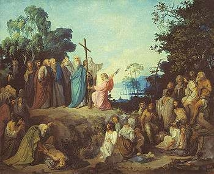

Աշխարհի հնագույն կրոնները
Նախագծային աշխատանք
Բուդդայականություն
Ութգետին ՈՒղին
Սա է Բուդդայականության հիմնական բարոյական ուղեցույցը, որով կարող ես առաջ շարժվել:
1,Ճիշտ հայացք-տեսնել աշխարհը ճիշտ ձևով
2,Ճիշտ միտք-մաքուր մտքեր
3,Ճիշտ խոսք-չստել,չհայհոյել
4,Ճիշտ վարք-չսպանել,չգողանալ
5,Ճիշտ ապրելակերպ-ապրուստ վայելուչ կերպով
6,Ճիշտ ջանք-սխալ ցանկություններից հեռու մնալ
7,Ճիշտ ուշադրություն-գիատակցված ապրել
8,Ճիշտ կենտոնացում-մեդիտացիայի միջոցով հոգևոր առաջընթաց
Բուդդայականությունը աշխարհի խոշորագույն կրոններից է,որը հիմնադրվել է Հնդկաստանում մեր թվարկությունից առաջ VI-V դարերում Սիդհարթա Գուատամայի՝ Բուդդայի կողմից:
Այն հիմնաված է Բուդդայի ուսմունքների վրա, որոնք ուղղված են տառապանքից ազատվելու և լուսավորության հասնելու ճանապարհին:
Բուդդայի ստեղծածը ոչ այնքան կրոն է, որքան մարդու զարգացման ճանապարհ: Գաուտամա Բուդդան ծնվել է մոտ 2500 տարի առաջ Հնդկաստանի հյուսիսում՝ թագա-վորական ընտանիքում: Գուշակել էին, որ նա կդառնա հզոր տիրակալ ու կհաղթի թշնամիներին, եթե չտեսնի մարդկանց տառապանքը, թե չէ կփոխի իր ուղին ու կդառնա մեծ ուսուցիչ։ Այդ պատճառով հայրը հրամայեց, որ Գաուտաման շրջապատված լինի միայն երիտասարդ, առողջ, գեղեցիկ ու երջանիկ մարդկանցով և երբեք ոչ մի բանի պակաս չունենա: Բարձրահասակ, կապուտաչյա երիտասարդ էր նա: Եվ ով գիտի` ինչ կլիներ, եթե քսանինը տարեկանում հանկարծ չհայտնվեր պալատի պարսպից այն կողմ: Նա տեսավ անբուժելի հիվանդ մի մարդու, հետո՝ ծեր, անօգնական մեկին և, վերջապես, մահացած մարդու։ Եվ հասկացավ, որ տառապանքը իշխում է այս կյանքում, որն ավարտվում է մահով: Նրա սիրտը լցվեց մարդկանց հանդեպ կարեկցանքով, և նա թաքուն հեռացավ տնից, որպեսզի գտնի տառապանքից ազատվելու ճանապարը: Երկար ճամփորդեց, փնտրեց, հանդիպեց տարբեր ուսուցիչների: Այդ ժամանակ Հյուսիսային Հնդկաստանում կային իմաստության բազմաթիվ դպրոցներ:
Այնուհետև Գաուտաման դարձավ ճգնավոր, ինքն իրեն բազմաթիվ զրկանքների ենթարկեց և ի վերջո հասկացավ
որ այդպես իրեն տանջող հարցի պատասխանը չի գտնի: Իմաստունները գուցե և հասնում են ինչ-որ բանի, բայց մնացած մարդիկ մնում են նույն վիճակում: Եվ ահա մի օր նա գտավ ուղին, որը, իր կարծիքով, պիտի օգներ մարդկանց: Այդ ուղով գնացող մարդը պիտի հրաժարվի չարից, ագա-հությունից, թշնամանքից, կենդանի էակներին վնասելուց և ապրի՝ անընդհատ կատարելագործվելով: Եվ մի օր նա կհաս նի կատարելության ու կազատվի տառապանքի շղթաներից:
Այդ ճանապարհը բաց է ցանկացած մարդու համար՝ ան-կախ նրա ծագումից, ազգից, սեռից, տարիքից և ընտանիքից: Բուդդայականության համար գոյություն չունեն «բարձր» և «ցածր» խավի մարդիկ, և վերջին աղքատն անգամ ոչնչով չի զիջում արքային: Դրանով Բուդդայի ուսմունքը բավականին մոտ է մեզ՝ քրիստոնյաներիս: Սակայն քրիստոնյայի համար, կարծում եմ, կարեկցանքից էլ բարձր մի բան կա աշխարհում՝ Սերը, որն ամեն ինչի Արարիչն է: Սիրել երկիր մոլորակը, հայրենիքը, կյանքը, մերձավորներին ու չհեռանալ երկրային հոգսերից, այլ հակառակը, պատրաստ լինել դրանք տանելու. սա է քրիստոնյայի ճանապարհը։
Ի տարբերություն քրիստոնեության և իսլամի, այստեղ բացակայում է աստծո առաջնաստեղծ էությունը,բացակայում է հոգու անմահության գաղափարը,դժողքի և դրաղտի գոյությունը:
Ճշմարիտ ուղի անցնելուց հետո մաարդը ձեռք է բերում անխռով հոգեվիճակ՝նիրվանա, որին կարելի է անցնել մեդիատացիայի (ինքնախորասուզման) միջոցով:
Չորս Վեհ Ճշմարտությունները
Դուքն(Տառապանք)-ԿՅանքն ինքնին տառապանք է, քանի որ այն ներառում է ծերություն, հիվանդություն և մահ
Սամուդայա(Տառապանքի պատճառը)-Տառապանքը առաջանում է ցանկություններից, կապվածությունից և տգիտությունից
Նիրոդհա(Տառապանքի վերջը)-Տառապանքը կարող է դադարել,եթե մարդ ազատվի ցանկություններից
Մարգա(Ութգետին ուղին)-Լուսավորության հասնելլու ճանապարհը՝ ձիշտ մտածողությամբ, վարքով և գործերով
Այսօր բուդդայականությունը աշխարհում ունի ավելի քան 500 միլիոն հետևորդ: Այն տարածված է հիմնականում Ասիայում,սակայն արևմտյան երկրներում ևս շատերն են հետաքրքրվում այս փիլիսոփայությամբ և դրա մեդիտացիոն պրակտիկաներով:
Իսլամ
Այս կրոնն Իսլամն է։ Այն քարոզում է հնազանդություն։ Իսլամը միաստվածային կրոն է, որի հմաձայն կա միայն մեկ աստված` Ալլահը և Մուհամադը` աստծո մարգարեն։Իսլամը սովորեցնում է որ աստված բարեգութ է, ամենազոր, եզակի և մարդկանց ուղղորդում է իր մարգարեների հայտնաբերած սուրբ գրությունների և բնական նշանների միջոցով։Իսլամի նախնական սուրբ գրությունները` Ս. Ղուրանը, մուսուլմանների համար աստծո բառացի խոսքն է և Մուհամադի ուսմունքները, որոնք հետագայում կոչվեցին սունա։
Իսլամը հիմնադրվել է7-րդ դարում Արաբական թերակղզում։Քրիստոնեությունից հետո երկրոդ մեծ ու տարածված կրոնը իսլամն է ։Հիմնադիրը Մուհամեդն էր ով ծնվել է 570թ ։Մուհամեդի մահից հետո նրա հետևորդները սկսեցին տարածել Իսլամը ոչ միայն Արաբական թերակղզում այլ նաև Արևելյան Միջերկրական և Հյուսիսային Աֆրիկայում։Մուհամեդը սկզբում հավաքեց ընդամենը մի քանի հետևորդներ ովքեր ընդունեցին նրա խոսքը և սկսեցին գործել ըստ իսլամի սկզբունքների։Այս մարդիկ հատկապես կոչվեցին <<Սահաբա>>։ Նրանք համակրում էին մարգարեին և հետևում նրա հրահանգներին։Մուհամեդը ծնվել է 570թ Մեքքա քաղաքում մի քանի տարի աշխատել է որպես առևտրական և տիրապետում է բարի համբավի։
Մուհամադը 40 տարեկանում սկսեց ստանալ առաջին ուղերձները, որոնք նրան հաջողվեցին Գաբրիել հրեշտակով։ Այս փորձառությունը սկսվեց Մեքայում, երբ Մուհամադը աղոթելու ժամանակ ստացավ սկզբնական ուղեցույցները։ Հետագայում դրանք հավաքվեցին ղուրանում, իսլամի սուրբ գրքում։ Մահմեդականները Մուհամեդին համարում են մեծ մարգարե Ալլահի դեսպան։ Մուհամեդը ուսումնասիրելով հուդայական և քրիստոնեական ուսմունքները, ստեղծել է իր մահմեդական վարդապետությունը։ Իսլամը որպես միաստվածության կրոն կարողացել է միավորել տարանջատ արաբական ցեղերը և ստեղծել մահմեդական համայնք, որը միաժամանակ և՛ քաղաքական և՛ կրոնական միավորում է։ Նրա հիմնական սկզբունքները շարադրված են Ղուրանում՝ մահմեդականների սուրբ գրքում։
Իսլամն ունի իր պատվիրանները, որոնք կոչվում են Դինի առանցք կամ <Հավատի սյուներ>։
1)Հավատի դավանում
2)Ամենօրյա հնգակի աղոթք
3)Պարտադիր բարեգործություն
4)Ուխտագնացություն դեպի սրբազան քաղաք Մեքքա
5)Ծոմապահություն։
Բացի ուղղափառ մահմեդականություն սուննիզմից առաջացել է նաև շիիզմը որպես հակադիր հոսանք։Այդ բաժանում տեղի ունեցավ 7-րդ դարում Մուհամեդ մարգարեի մահից հետո ըստ սուննիների առաջնորը պետք է ընդունվեր ողջ համայնքի համաձայնությամբ իսկ շիաները պաշտպանում էին սերունդների ժառանգական իրավունքները։
622 թվականին Մուհամադը Մեքայից գաղթել կամ փախել է Մեդիա։ Այդ փախուստը կոչվել է Հջրա, փախուստի տարի։ Հիջրան դարձել է մահմեդական թվականության սկիզբը։ Հիջրայի տարին ունի 12 ամիս՝ մեկընդմեջ 30 և 29 օրերով։
Ալլահ-արաբերեն աստված արարիչ ամեն ինչ ստեղծող և կազմակերպիչ։
Ղուրանը իսլամի սուրբ գիրքն է։ Այն ուղիղ հավերժական և իրական Աստծո խոսքն է։ Ղուրանը ուղարկվել է Աստծո կողմից յոթերորդ երկինք, և ապա հրեշտակ Գաբրիելը մաս_մաս փոխանցել է այն Մուհամեդ մարգարեին ավելի քան 23 տարիների ընթացքում։
Մահմեդականների համայնքները գոյություն ունեն ավելի քան 120 երկրում։35 երկրներում մահմեդականները կազմում են բնակչության մեծ մասը,29 երկրներում կազմում է փոքրամասնությունը, 28 երկրներում Իսլամը ճանաչվել էր պետական կրոն։
Իսլամն ունի օրենքներ, որոնք հաստատվել են <Մարդու իրավունքների պաշտպանության> հռչակագրում։
Ըստ դրա`
1)Կյանքն աստծո կողմից տրված պարգև է և կյանքից զրկելն անթույլատրելի է։
2)Զինված հակամարտության դեպքում չի կարելի սպանել ծերերին, կանանց և երեխաներին։
3)Չի կարելի պղծել մահացած մարդկանց մարմինները և չի կարելի քանդել քաղաքացիական շենքերը, կառույցները և կարևոր հաստատությունները։
Քրիստոնեություն

Այս կրոնը քրիստոնեությունն է,որն իրենից սեր ու լույս է ճառագում,լինել քրիստոնյա նշանակում է լինել սիրով,գթյությամբ,բարությամբ,կարեկցանքով ու կամեցողությամբ,սրտով լեցուն մարդ:
Քրիստոնեություն կրոնը որն հիմնված է Հիսուս Քրիստոսի ուսմունքների վրա, սկսել է ի հայտ գալ 1- ին դարում հռոմեական կայսրության տարածքում, Հիսուսը ծնվել է մոտավորապես 4-6 թթ.: Քրիստոսը, նրա կյանքը և ուսմունքը ձևավորվեցին քրիստոնեության հիմքերը։Նրա հետևորդները , որոնք կոչվեցին աշակերտներ կամ առաքյալներ , սկսել են տարածել նրա ուսմունքը,ինչի արդյունքում ծագել է նոր կրոն ' քրիստոնեություն։
Քրիստոնեությունը աշխարհի ամենամեծ և ազդեցիկ կրոններից մեկն է, որն առաջացել է մեր թվարկության առաջին դարում: Այն հիմնված է Հիսուս Քրիստոսի ուսմունքների վրա և կարևոր դեր ունի մարդկային հասարակության հոգևոր, բարոյական, մշակութային և քաղաքական զարգացման մեջ: Քրիստոնեությունը ձևավորվելէ բարոյական արժեքներ, որոնք դարերի ընթացքում դարձել են համամարդկային ՝ ներառելով սեր, կարեքցանք, ներողամտություն, արդարություն և խոնարհություն:Քրիստոնեությունը կարևորում է մարդկային կյանքի անսահման արժեքը ՝ հավատալով, որ յուրաքանչյուր անձ Աստծո պատկերով և նմանությանբ է ստեղծված: Այն խրախուսում է մարդու հոգևոր զարգացումը, ինքնազոհողությունը և ուրիշների հանդեպ կարեկցանքը
Քրիստոնեությունը լայնորեն տարածված է աշխարհում և համարվում է 3 հիմնական համաշխարհային կրոններից մեկը։Կրոնի հիմնադիրը Հիսուս Քրիստոսն է,ում հավատացողները ընդունում են որպես Աստծո որդի և մարդկության փրկիչ:
Քրիստոնեությունը սկզբում տարածվում էր Պաղեստինի շրջանում, ապա հռոմեական կայսրության տարբեր հատվածներում,մասնավորապես' Ասիայի մեծ քաղաքներում, ինչպես նաև Եվրոպայում ։4- րդ դարում կայսեր Կոնստանդին 1- ի կողմից քրիստոնեությունը դարձավ պետական կրոն։
Այսօր քրիստոնեությունը շարունակում է մնալ կարևոր ուժ, որը միավորում է միլիոնավոր մարդկանց հավատքի, բարոյականության և սիրո գաղափարների շուրջ: Այն ազդեցություն ունի հասարակական բարեփոխումների, մարդու իրավունքների պաշտպանության և բարեգործական նախաձեռնությունների վրա: Շատ քրիստոնեական կազմակերպություններ նպաստում են աղքատության նվազեցմանը, խաղաղության հաստատմանը և կրթության տարածմանը ամբողջ աշխարհում:
Քրիստոնեությունը բաժանվում է մի քանի մեծ ճյուղերի ,այդ թվում կաթոլիկ,ուղղափառ և պրոտերիատական եկեղեցիների։ Քրիստոնեությունը ունի ավանդույթներ ,սրբազան դրույթներ և հարկ, պաշտամունքի գործողություններ,ինչպիսիք են աղոթքները,սուրբ հաղորդությունը ,խաչելությունը և հարությունը' Հիսուսի կյանքի կարևոր հատվածներ։
Քրիստոնեության տարածումը ամբողջ աշխարհում,նշանակում է, որ քրիստոնեական հավատքը և ուսմունքները սկսեցին տարածվել տարպեր տարածաշրջաններում և երկրներում՝ ըստ ժամանակի, պայմաններին, պատմական հանգամանքներիՀիսուսի աշակերտները, հատկապես Պողոսը, սկսել է քարոզել Հռոմեական կայսրությունում՝ տարածելով քրիստոնեության ուղերձը:
Քրիստոնեության 10 պատվիրանները
1. Ես եմ քո Տեր Աստվածը, ինձանից բացի այլ աստվածներ չպիտի լինեն քեզ համար:
2. Քեզ կուռքեր չպիտի կերտես:
3.Քո Տեր Աստծո անունը զուր տեղը չպիտի արտասանես:
4.Հիշիր շաբաթ օրը, որպեսզի սուրբ պահես այն:
5.Պատվիր քո հորն ու մորը:
6.Մի սպանիր:
7.Մի շնանար:
8.Մի գողանար:
9.Քո հարևանի դեմ սուտ վկայություն մի տուր:
10.Ոչ քո մերձավորի տան, ոչ նրա ագարակի վրա աչք մի ունեցիր:
Քրիստոնեությունն ունի նաև 7 խորհուրդներ
1. Մկրտություն
2. Դրոշմ
3. Ապաշխարություն
4. Հաղորդություն
5. Պսակ Ամուսնության
6. Վերջին օծում կամ կարգ հիվանդաց
7. Ձեռնադրություն
Այո կյանքը իմաստ ունի եթե սիրում ես:Սերը միավորում է մարդկանց և ներումը դարձնում է մեզ ուժեղ։
Հայր մեր որ յերկինս ես,
Սուրբ եղիցի անուն Քո։
Եկեսցէ արքայութիւն Քո։
Եղիցին կամք Քո
Որպէս յերկինս եւ յերկրի։
Զհաց մեր հանապազորդ
Տուր մեզ այսօր։
Եւ թող մեզ զպարտիս մեր,
Որպէս և մեք թողումք
Մերոց պարտապանաց։
Եւ մի տանիր զմեզ ի փորձութիւն։
Այլ փրկեա զմեզ ի չարէ։
Զի քո է արքայութիւն
ԵՎ զօրութիւն եւ փառք
Յաւիտեանս
Ամէն
Մասնակիցներ
Խաչատրյան Լիլիա
Անտիկյան Մերի
Ղահրամանյան Սաթենիկ
Գևորգյան Ալվարդ
Դալլաքյան Մանե
Տեր-Գևորգյան Անահիտ
Սուսաննա
Ղազարյան Գոռ
Դարբինյան Աշոտ
Եղոյան Արա
Ուսուցչուհի՝ Լիլիթ Լոռեցյան
 (1).jpg)

.jpeg)